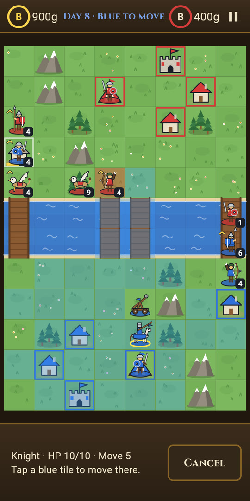
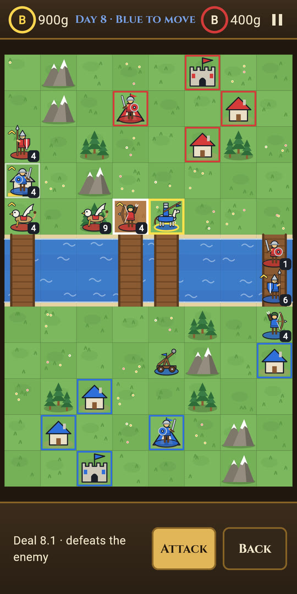
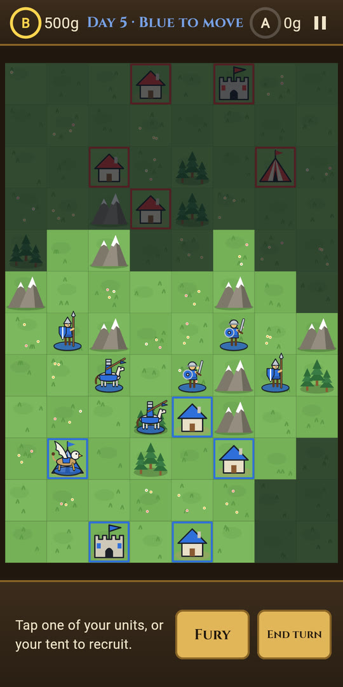
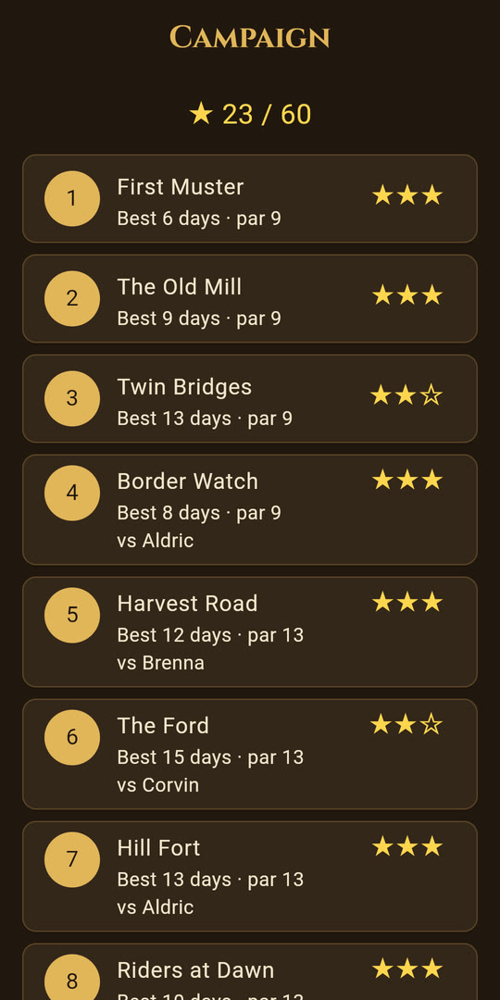
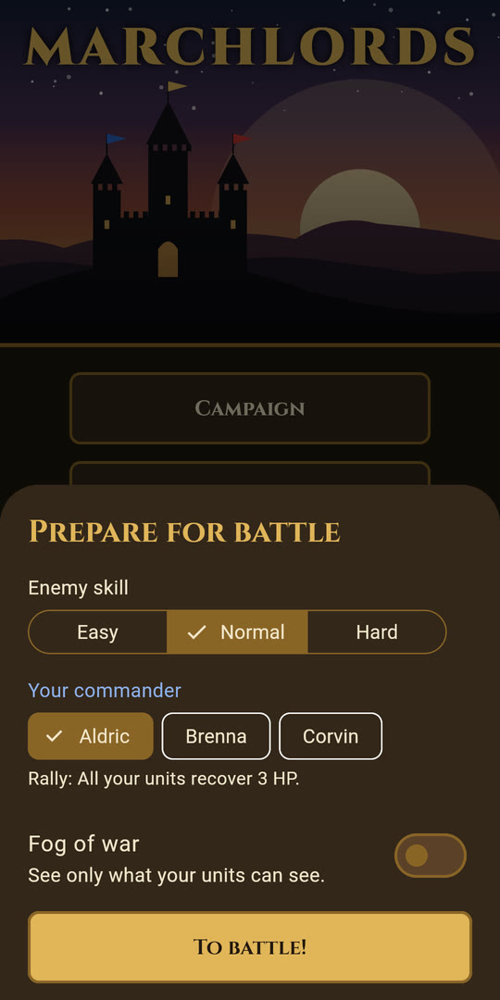
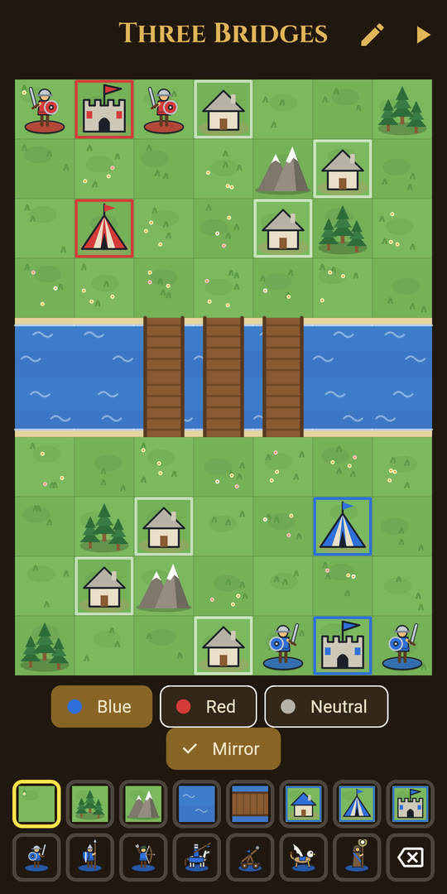

How it plays
Turn by turn
Blue and Red take turns. Each unit moves once, then attacks, captures or waits. Win by capturing the enemy castle or defeating every enemy unit.
Gold and recruits
Infantry and spearmen capture villages. Every building you hold pays gold each day, which you spend at your tent on new units.
Terrain matters
Forests, mountains and buildings protect whoever stands on them. Rivers can only be crossed at bridges, unless you have wings.
Commanders
Fighting fills your commander's meter. When it is full, unleash a power once: heal your army, strike harder for a turn, or march farther.
Four ways to play
The campaign, skirmishes on random maps against an Easy, Normal or Hard computer, two players on one device, and maps you build yourself.
Stop any time
Your battle is saved after every move. You can undo actions until you end your turn, and no account is needed.
Seven units
- Infantry: cheap, and they capture buildings.
- Spearmen: stop knights, and capture buildings too.
- Archers: strike from two tiles away and bring down griffins.
- Knights: fast and hard-hitting.
- Catapults: long range, but they cannot move and fire in the same turn.
- Griffins: fly over rivers and mountains.
- Monks: heal the ally beside them.